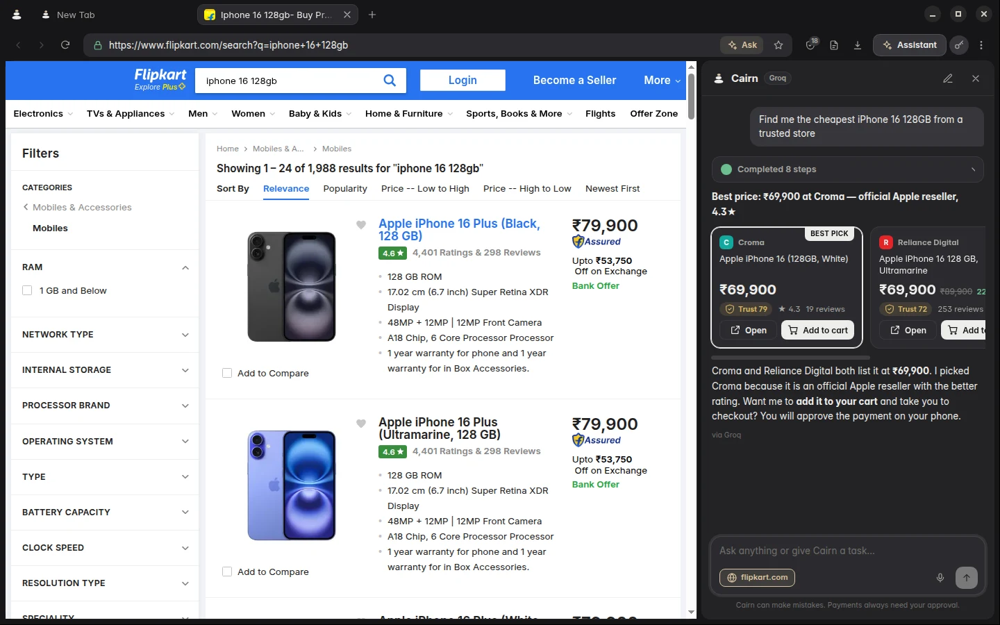
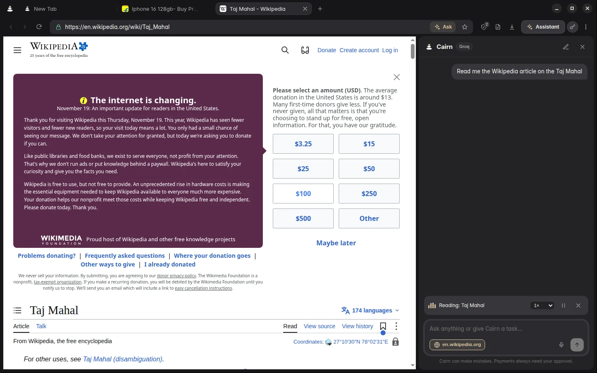
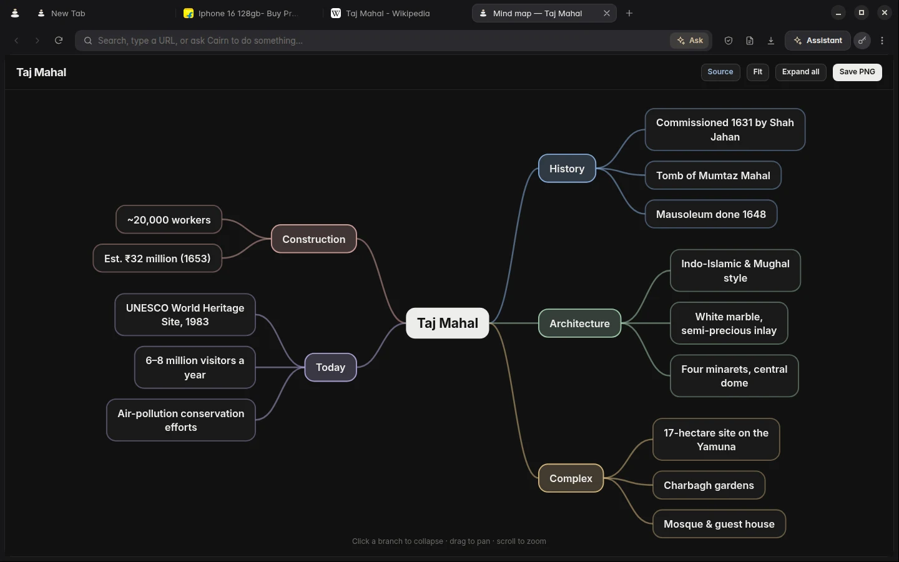
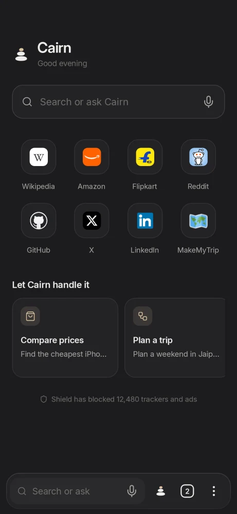
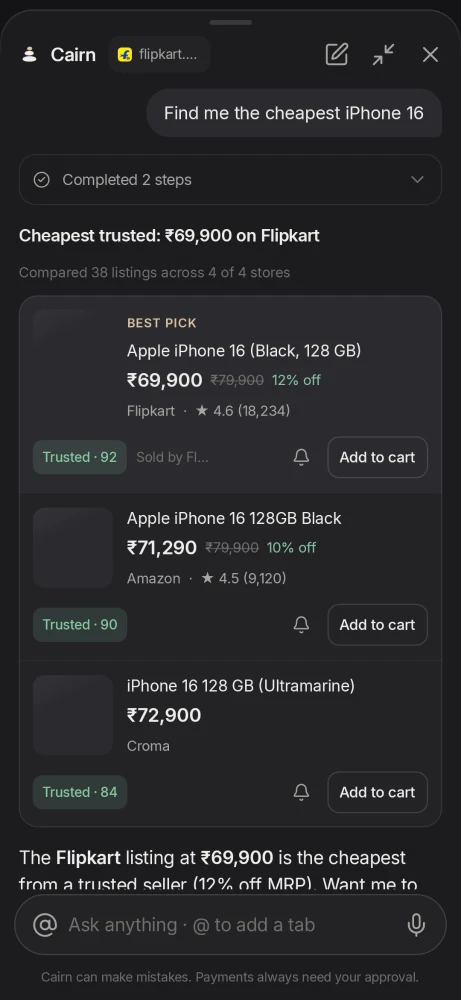
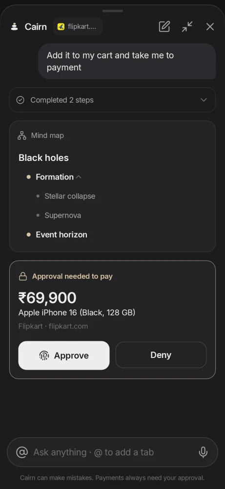

Just say it. Cairn gets it done.
An agentic browser that does the work for you. Ask in Hindi, Hinglish or any language — Cairn browses, compares prices across stores, fills your cart and stops at payment, so you approve it with your fingerprint on your phone.
Watch the 30-second demo
Two demos. Zero setup.
The new bento home, Claude-level comparison answers with live sources, and the full Find → Cart → UPI flow with Circle to Ask.
From “I want this” to the payment page — without lifting a finger.
Say it the way you'd say it to a friend.
Type or speak — Cairn understands Hindi, Hinglish, English and dozens more, and replies in your language. Voice input runs on Groq Whisper.

It checks every major store in parallel.
Amazon.in, Flipkart, Croma, Reliance Digital, Vijay Sales and Tata CLiQ load side by side in hidden tabs. Accessories, refurbished units and the wrong variant are filtered out, and every listing gets a trust score from seller, rating, review count and discount sanity.
“Add it to my cart” — and it's done.
Cairn opens the product, adds it to your cart and walks through checkout using the address saved in your store account — clicking, typing and scrolling in a real browser tab you can watch. Logins, OTPs and CAPTCHAs are handed back to you.

Payment waits for your fingerprint.
At the payment step the agent stops. Your paired Android phone shows the merchant, item and exact amount; approve with fingerprint, face or PIN — or deny. Nothing is ever paid without you.
“Read me this Wikipedia article.”
Cairn finds the article, reads it in the background and speaks it to you — no clicking around. It strips references, infoboxes and menus so you only hear the story.
- Natural voices in Hindi, English and regional languages using your system voices, with cloud speech as a fallback.
- Pause, speed up, skip from the mini-player while you keep browsing.
- “Now save it to my phone” — it becomes a clean PDF and lands in the folder you name.

Any page, instantly turned into what you need.
One click from the toolbar, or just ask. Everything is saved locally and can be sent to your phone.
Summary
A TL;DR in your language with key points, numbers and takeaways — then ask follow-ups.
Clean PDF
Article-only PDF without ads or menus, or a full-page PDF exactly as you see it.
Mind map
The page as an interactive, collapsible map you can pan, zoom and export as PNG.
Long screenshot
Capture an entire scrolling page in one image — up to 16,000 pixels tall.
Reader mode
Distraction-free reading with comfortable typography — just the article.
Send to phone
Any file, PDF or screenshot goes straight to a folder on your phone — no cables, no WhatsApp-to-self.
Understand long pages at a glance.
Cairn reads the page and builds a map of its ideas. Click a branch to fold it, drag to explore, and save it for your notes.
All page tools
An agent you can trust with your cart — and your passwords.
Biometric approvals
Payments and purchases require fingerprint, face or device PIN on your paired phone. The screen can't be screenshotted.
Passkeys & passwords
Sign in to Cairn with a passkey. A built-in password manager saves, generates and autofills — encrypted with your OS keychain.
Cairn Shield
Blocks ads, trackers and cryptominers on every site, and sends Do Not Track and Global Privacy Control.
Your own account
Email + password with CAPTCHA, rotating sessions, passkeys and password reset — no third-party login required.
Powered by Groq and NVIDIA NIM.
Cairn plans with large open models served at very high speed. It's built in — no keys to set up. If one provider is busy, it switches to the other automatically.
Groq
Primary- Agent & planning
openai/gpt-oss-120b - Quick tasks
openai/gpt-oss-20b - Voice input
whisper-large-v3-turbo
NVIDIA NIM
Fallback · Vision- Agent & vision
nvidia/nemotron-3.5-super-vl-120b-a12b - Quick tasks
nvidia/nemotron-3.5-bolt-e4b - Endpoint
integrate.api.nvidia.com
The same browser, built for your phone.
A full Chromium browser with tabs, private browsing, Shield, passwords and downloads — and the assistant one tap away at the bottom of the screen. Pair it with your computer and your phone also becomes the key that approves payments.
- The agent, on mobile — compare prices, fill carts, read articles aloud and make mind maps right on your phone.
- One-handed by design — address bar at the bottom, swipe between tabs, voice input everywhere.
- Fingerprint approvals for payments started on your phone or your computer.



Good to know.
Is Cairn free?
Can Cairn pay without me?
Which stores does price comparison cover?
Does it work in Hindi and other Indian languages?
What data leaves my computer?
Is there an iPhone app?
Your browser, your cairn.
Download free for Windows, macOS and Linux. Pair your Android phone in under a minute.